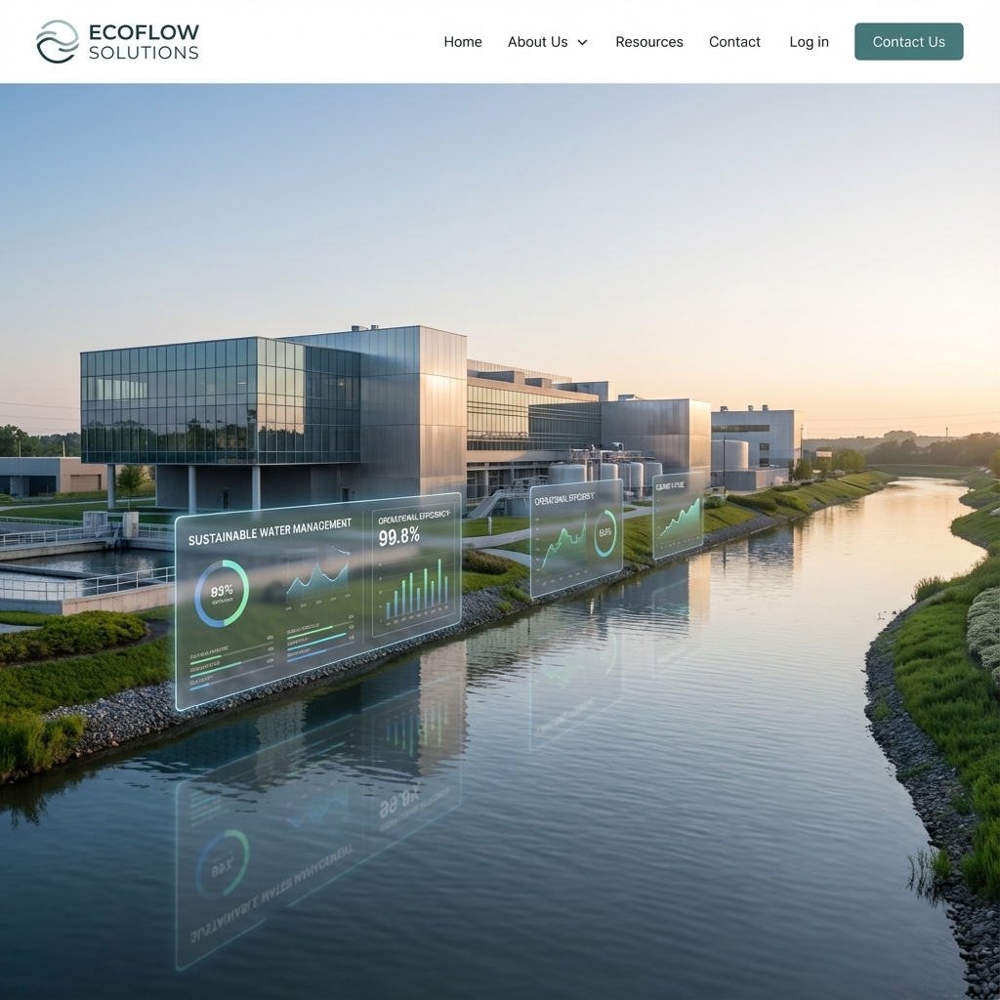

Design & Engineering
Process design, hydraulic sizing, civil coordination, mechanical, electrical, piping and instrumentation inputs for industrial wastewater treatment.
EPC Projects
EEPL delivers turnkey ETP, STP, CETP, ZLD and water treatment EPC projects for industrial clients that need reliable compliance, predictable execution and long-term plant performance.
Request an EPC Proposal
Process design, hydraulic sizing, civil coordination, mechanical, electrical, piping and instrumentation inputs for industrial wastewater treatment.
Equipment selection, vendor coordination, fabrication support, erection and site installation for water treatment EPC projects.
Commissioning, performance trials, operator training and documentation aligned to PCB and CPCB compliance expectations.
EEPL works as an EPC company for STP, ETP and ZLD systems, supporting design build operate water treatment plants for industrial and environmental infrastructure projects.